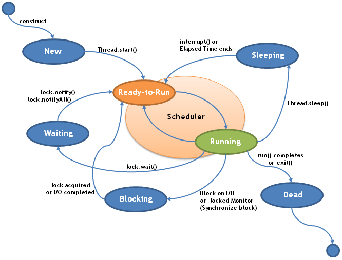

Multitasking is the capabity to execute two or more programs (processes) concurrently. Whereas, multithreading is the capability when a single program can perform two or more tasks concurrently, thus making maximum use of the processing power available in the system.
Multitasking threads require less overhead than Multitasking processes.
Processes are heavy-weight tasks that require their own seperate adderess spaces, whereas threads are light-weight and share the same address space and cooperatively share the same heavy-weight process.
Interprocess communication is costly, whereas interthread communication is inexpensive.
Context switching from one process to another is also costly, whereas in case of threads, context switching is lower in cost.
The benefit of multithreading is that while one thread pauses for some parts of the program to finish executing, like waiting for user input etc., the idle time created can be utilized elsewhere, thus all other threads continue to execute.
A thread lifecycle has several states. Once a thread is created and gets CPU time it can be ready to run. A thread can be running. A running thread can be suspended, which temporarily stops executing. A suspended thread can be resumed, from where it stopped. A thread can also be blocked, when its not getting a resource. Anytime a thread can be terminated and cannot resume execution thereafter.

Threads are assigned a priority, basically an integer value that determines when to switch from one running thread to the next. This is known as context switch. A thread can voluntarily give up control or can be preempted by a higher-priority thread.
If a thread wants to modify some data where another thread is in the middle of reading it, such situation needs to be prevented. In Java, synchronization support is built into the language. When a thread is inside a synchronized method, no other thead can call any other synchronized method on the same object.
The main thread starts running immediately when a program is executed and generally it is the last thread to finish execution because it performs various shutdown actions. Also, from the main thread other child threads are spawned.
A thread can be created by instantiating an object of type Thread. It can be done either by implementing the Runnable interface, or by extending the Thread class.
Runnable can be implemented by implementing a single method called run(). It specifies the entry point for another, concurrent thread of execution withing the program. Inside run() that code that constitute the new thread is written. After a new thread is created, to make it running, call the start() method, which initiates a call to run().
When creating a new thread by extending the Thread class and then creating an instance of that class, the extending class must override the run() method which serves as the entry point for the new thread. A call to start() begins execution of the new thread.
| Exploring the main thread | |
| Create child thread by implementing Runnable | |
| Create child thread by extending Thread |